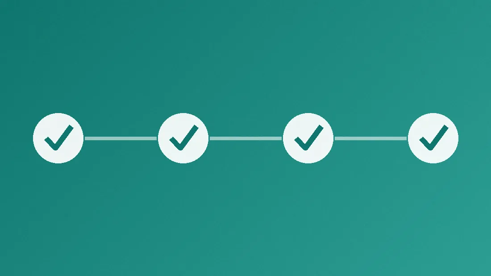
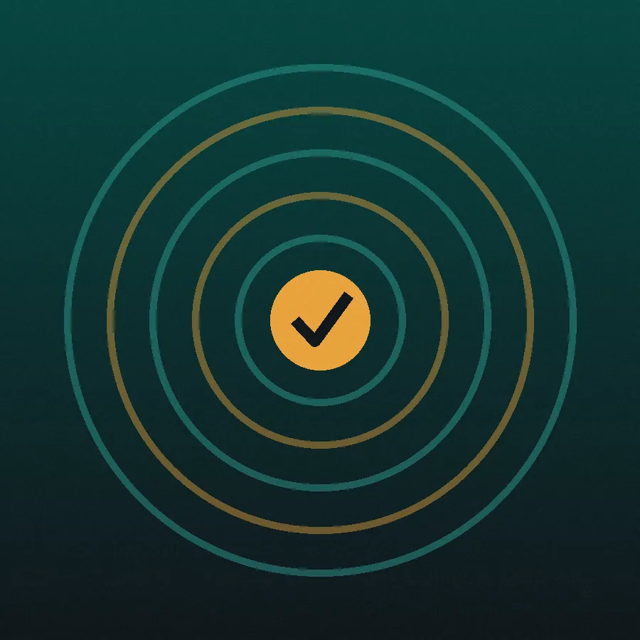

QA testing guide
How to run a structured test pass
A good QA pass is repeatable: anyone on the team could pick up the same checklist and get the same coverage. This guide walks through the four stages Checkpoint QA is built around — plan, test, log, and sign-off.

1. Plan the pass
Before touching a device, decide what you are verifying and why. A clear scope keeps a pass from sprawling. Identify the feature or build under test, the platforms it ships to, and the behavior that must work for the release to go out.
- List the platforms in scope — web, iOS, tvOS, Android, Android TV, and Roku each behave differently.
- Write checks as observable outcomes, not vague intentions. “Filters reset after sign-out” is testable; “test filtering” is not.
- Assign a priority to every check so triage is fast later.
2. Understand priorities
Priority is the single most useful label on a check. It answers one question: if this fails, does the build still ship?
P1 — Blocker. Core functionality. A failing P1 means the build is not shippable. Sign-in, playback, and content filtering usually live here.
P2 — Major. Important but recoverable. The release can proceed with a known issue logged.
P3 — Minor. Polish, cosmetics, and edge cases that do not affect core use.
Checkpoint QA watches for failing P1 checks and raises a hard-fail banner the moment one appears, so a blocker can never quietly sit in a long list.

3. Test across platforms
The same feature rarely behaves identically on every device. Remote-based navigation on a TV exposes focus bugs that a mouse never will, and a backgrounded mobile app can lose state that a desktop tab keeps. Run each platform’s checklist on real hardware whenever possible, and note the build number you tested.
- Web: verify across more than one browser engine, and at both mobile and desktop widths.
- Mobile: test backgrounding, rotation, and permission prompts.
- TV: walk every control with the remote’s directional pad and confirm focus is always visible.
4. Log results and sign off
A pass is only finished when its results are recorded somewhere durable. Mark each check, capture the failures with enough detail to reproduce them, and copy the summary into your tracker. A run with a failing P1 should never be signed off as complete.
When every priority-1 check passes and remaining issues are logged, the build is ready for sign-off. Checkpoint QA’s scorecard gives you that snapshot at a glance.